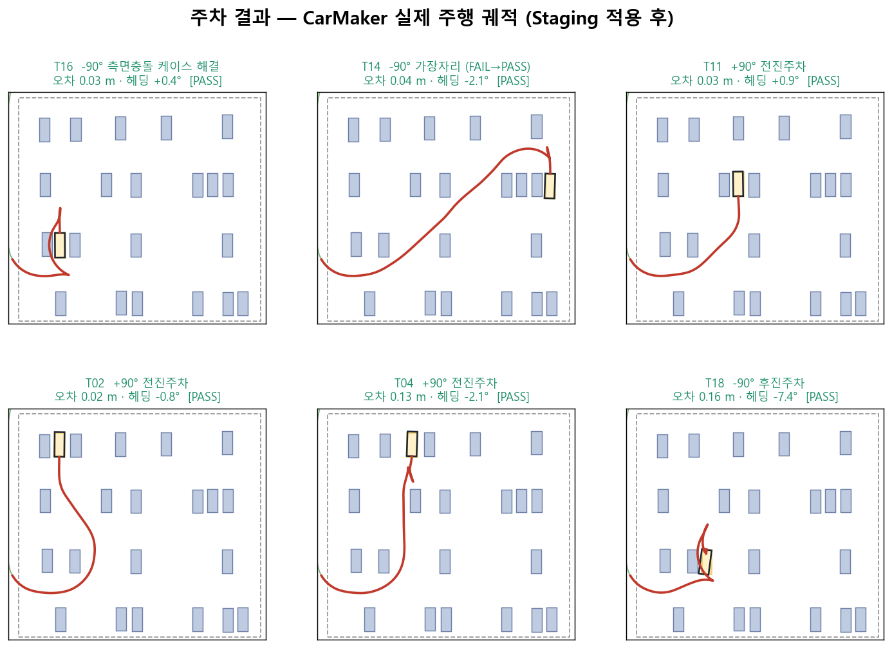
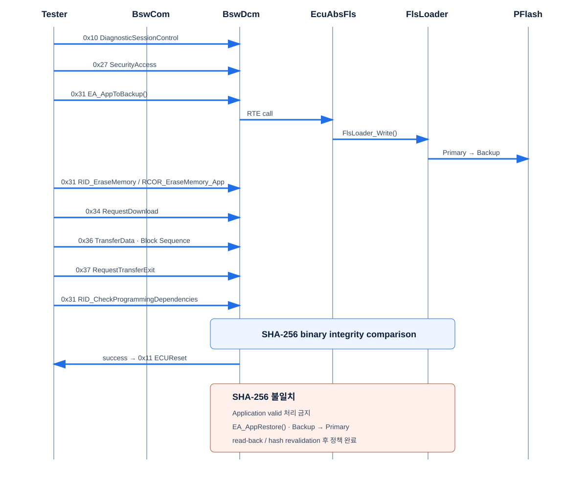

VERIFICATION-FOCUSED VEHICLE SW ENGINEER
차량 소프트웨어를
검증 가능한 증거로 설명합니다.
임베디드 SW 개발 이해를 바탕으로 CANoe/CAPL 검증 자동화와 결함 원인 분석을 수행합니다. 요구사항을 테스트 가능한 기준으로 바꾸고, 결과와 한계를 재현 가능한 자료로 남깁니다.
- 15
- 정적 4건 · 동적 11건블랙박스 개인 검증에서 식별·문서화
- 0.16 m
- 6인 팀 최종 평가6개 주차 시나리오 전체 PASS, 최대 오차 0.16 m
- 7
- 7개 UDS 서비스교육용 OTA Bootloader 개인 구현
SELECTED WORK
선택 프로젝트
수치가 나온 조건, 내가 맡은 범위, 남아 있는 한계까지 함께 적었습니다.
- Black Box Validation
- CarMaker ADAS
- OTA Bootloader
01
개인 프로젝트 · 2026.03.19–2026.03.23 · 기여 100%
Black Box Validation
CANdb와 CANoe 환경을 구성하고, 7개 고장 시나리오를 6개 CAPL 스크립트와 24개 테스트 케이스로 검증했습니다.
- 결과
- 정적 4건 · 동적 11건을 식별해 문서화. 동적 결함 11건 중 10건은 CAPL 결과 캡처 공개
- 담당
- 요구사항 분석, 테스트 설계, CANdb/CANoe 환경, CAPL 자동화, Trace 분석, 결함 문서화
- 한계
- 결함 15건을 모두 수정했다고 주장하지 않으며, 교육 자료 보호를 위해 소스와 요구사항 캡처는 비공개
검증 과정과 결함 증거 보기
 CANoe 검증 환경. Fresh Frame 타이밍은 새 참조 프레임 수신 후에만 1 ms 타이머를 시작하도록 바로잡아 검증했습니다.
CANoe 검증 환경. Fresh Frame 타이밍은 새 참조 프레임 수신 후에만 1 ms 타이머를 시작하도록 바로잡아 검증했습니다.
02
6인 팀 프로젝트 · 2026.05.21–2026.06.05 · 팀장 · 주차 경로계획
CarMaker ADAS
Hybrid A*, staging 전략, Reeds–Shepp 정밀 정렬로 주차 경로를 설계했습니다. 주차 작업은 주차 제어 팀원과 페어로 개발했습니다.
- 팀 결과
- Baseline 14/19 PASS. T05 51.6 m→0.02 m, T10 20.3 m→0.02 m, T14 3.5 m→0.04 m. 6인 팀 최종 평가 6개 PASS, 최대 오차 0.16 m
- 개인 범위
- 팀장 및 주차 경로계획. 개인 구현은 11개 commit, MATLAB 모듈 9개, N≥8 반복 실험에서 주차 진입 도달률 0%→100%
- 한계
- 최종 수치는 팀 성과이며 19/19 PASS나 개인 단독 성과로 표현하지 않음
팀 평가와 개인 기여 근거 보기

6개 최종 시나리오 PASS와 최대 오차 0.16 m는 6인 팀 결과입니다. 저의 범위는 팀장과 주차 경로계획이며, 주차는 제어 팀원과 함께 개발했습니다.
03
개인 프로젝트 · 2026.03.03–2026.03.24 · 기여 100%
OTA Bootloader
제공된 AURIX TC234LP·MCAL 교육 환경에서 진단 재프로그래밍과 Primary→Backup 복사, 실패 시 Primary 복구 흐름을 구현했습니다.
- 구현
- 0x10, 0x27, 0x31, 0x34, 0x36, 0x37, 0x11의 7개 UDS 서비스. 0x31이 두 routine에 사용돼 전체 흐름은 8단계
- 검증
- 공개 테스트 PASS 7 · Evidence unavailable 2 · Not executed 1. Trace32에서 copyBuf, A5, DEADD가 0x7000240D에 수렴하는 미정렬을 확인하고 uint32 배열로 4-byte 정렬
- 한계
- 고정 prefix SHA-256는 HMAC도 전자서명도 아니며 재계산 공격을 막지 못함. 현재 TASKING·EB tresos·타겟 ECU 부재로 신규 빌드와 하드웨어 재테스트 미수행, 정적 리뷰 지적 사항 미해결
재프로그래밍 흐름과 한계 보기

7개 SID로 구성한 8단계 교육용 재프로그래밍 흐름. 복구 경로와 보안 모델의 제약을 함께 공개합니다.
EVIDENCE DISCIPLINE
성과와 한계를 같은 무게로 기록합니다
보여줄 수 있는 것과 확인하지 못한 것을 분리해 결과의 범위를 명확히 합니다.
- Measured
- 조건과 단위를 명시한 정량 결과로 성능을 설명합니다.
- Demonstrated
- Trace, 결과 캡처, 코드, 실험 기록으로 다시 확인할 수 있게 합니다.
- Limitation
- 도구·하드웨어·공개 범위의 제약과 미해결 상태를 숨기지 않습니다.
EXPERIENCE
검증과 개발을 연결하는 기반
Verification automation
요구사항에서 재현 가능한 테스트까지
CANoe, CAPL, CANdb로 테스트 환경을 구성하고 Trace로 결함 원인을 추적합니다.
Embedded foundation
자동차 임베디드 SW 개발 이해
C, MCU, AUTOSAR MCAL, UDS를 기반으로 구현 제약을 이해하고 검증 관점으로 확장합니다.
System integration
알고리즘·제어·시뮬레이션의 경계 조율
CarMaker와 MATLAB 기반 팀 프로젝트에서 통합 기준을 맞추고 평가 결과를 관리했습니다.
교육 차량 임베디드 SW 및 제어·검증 프로젝트 과정
역량 CANoe/CAPL · C · AUTOSAR MCAL · UDS · MATLAB · IPG CarMaker